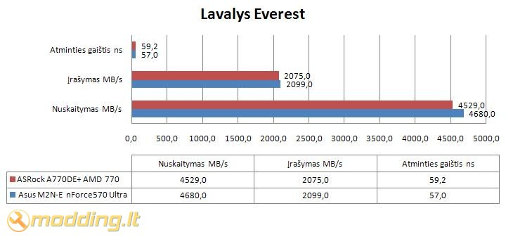
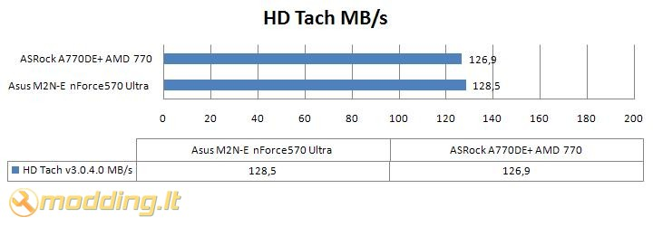
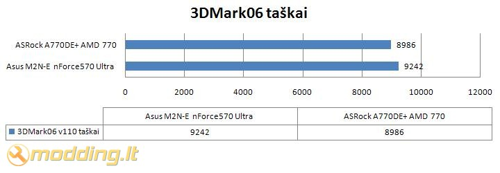
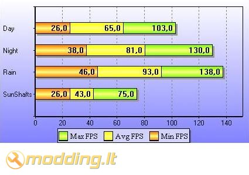
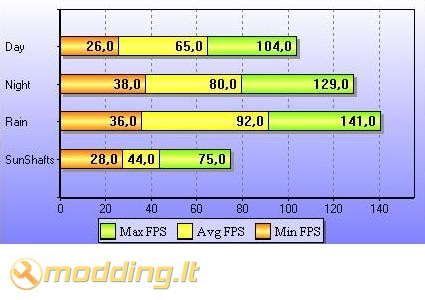

ASRock A770DE+ motininė plokštė
Kompanija ASRock buvo įkurta 2002 metais, jos pagrindinė veiklos sritis - motininių plokščių gamyba. Kompanija pirkėjams stengiasi pateikti gaminius, kurie pasižymėtu geru kainos-efektyvumo santykiu. Šios kompanijos gaminiai atitinka ROHS direktyvas o taipogi kompanija stengiasi į savo gaminius įdiegti energiją taupančias technologijas. Šiandieną mūsų testuose ASRock A770DE+ motininė plokštė - AM2+/AM3 skirta plokštė, turinti AMD 770 chipsetą bei palaikanti 140W CPU.
Žvilgsnis iš arčiau
ASRock A770DE+ motininė plokštė atkeliavo standartinėje motininių plokščių pakuotėje. Priekinėjo joas dalyje nurodytos plokštes ypatybės, tokios kaip AM3 CPU Ready, Instant Boot bei 140W CPU Support. Kitoje pakuotės pusėje randame trumpą plokštės aprašyma 10 užsienio kalbų, AMD Over Drive programos aprašymą bei užsienio hardware tinklapių apdovanojimus - tikiuosi, kad vieną dieną ten ten bus ir modding.lt apdovanojimas.
Pakuotės viduje randame:
- A770DE+ motininę plokštę
- shield - galinę sienelę
- support CD
- manual vartotojo knygelę
- ATA 133 kabelį
- 2 x SATA Data kebelius
- 1 x SATA 1 to 1 Power kabelį
Support CD turinys:
- AMD All in 1 Driver
- USB 2.0 Driver
- HD Audio Driver
- GigaLAN Driver
- K8 CPU Driver
- Microsoft DirectX 9.0c Driver
- Norton Internet Security
- ASRock OC Tuner
- ADOBE Acrobat Reader V8.12
- ASRock IES
- ASRock Instant Boot
- AMD OverDrive
Atidaręs pakuotę pamačiau nedidelį priedų kiekį - tai normalu žemų kainų plokštėms. Norint išlaikyti plokštės performance -t aupoma priedų sąskaita. Komplekte nėra jokių papildomų jungčių ar prietaisų, tik patys reikalingiausi komponentai.
Specifikacijos- Support for Socket AM2+ / AM2 /AM3 processors
- Supports CPU up to 140W
- Supports AMD OverDrive™ with ACC feature (Advanced Clock Calibration)
- AMD 770 + SB710 Chipsets
- FSB 2600 MHz (5.2 GT/s)
- Supports Dual Channel DDR2 1066/800/667/533 (4 x DIMM slots) non-ECC, un-buffered memory, Max. capacity up to 16GB
- Supports ATI™ CrossFireX™
- 2 x PCI Express 2.0 x16 slots (green @ x16 mode, orange @ x4 mode)
- 6 x SATAII 3.0 Gb/s connectors, support RAID (RAID 0, RAID 1, RAID 10 and JBOD), NCQ, AHCI and "Hot Plug" functions
- PCIE x1
- Gigabit LAN 10/100/1000 Mb/s
- Supports ASRock Instant Boot, OC DNA
- Supports Smart BIOS, ASRock OC Tuner, Intelligent Energy Saver
- 7.1 CH Windows® Vista™ Premium Level HD Audio (VIA® VT1708S Audio Codec with QSound)
- Windows® Vista™ Premium 2008 Logo Ready
ASRock A770DE+ plokštės PCB mėlynos spalvos. DDR2 slotai geltoni, išdėstyti dešinėje pusėje vertikaliai, veikiantys Dual Channel rėžime. Maksimalus atminties kiekis 16GB, tačiau jis priklauso nuo OS (plačiau galite pasiskaityti gamintojo puslapyje). CPU lizdas viršuje, per centrą. Po juo - AMD 770 Šiaurinis tiltas (Northbridge). Dešiniajame apatiniame kampe išdėstytos šešios SATAII (3.0 Gb/s) jungtys. Šialia jų - AMD SB710 Pietinis tiltas (Southbridge). Dešiniąjam krašte, per plokštės vidurį, išdėstytas IDE lizdas. Plokštės apatiniame krašte, per vidurį, išdėstytas Floppy IDE lizdas. Šialia jo - COM1, HD Audio bei Panel pinai.
Tiek Northbridge, tiek Southbridge aušinami nedideliais radiatoriais. Plokštės aušinimui nenaudojami heatpipe vamzdeliai - kaip jau minėjau, plokštė ne iš brangiųjų, todėl koplektacija paprasta. CPU balckplate ne metalinis, o plastmasinis.
Išvestys galinėje sienelėje:
- 1 x PS/2 Mouse Port
- 1 x PS/2 Keyboard Port
- 1 x Coaxial SPDIF Out Port
- 1 x Optical SPDIF Out Port
- 6 x Ready-to-Use USB 2.0 Ports
- 1 x RJ-45 LAN Port with LED (ACT/LINK LED and SPEED LED)
- HD Audio Jack: Side Speaker / Rear Speaker / Central / Bass / Line in / Front Speaker / Microphone
ASRock A770DE+ motininė plokštė turi 6 USB 2.0 - tai geras rodiklis. Vienas RJ-45 LAN lizdas, du PS/2, audio lizdai ir dar keli lizdai - standartinis rinkinys. Jokių Firewire ar eSATA čia nerasite. A770DE+ plokštėje naudojama 7.1 CH Windows® Vista™ Premium Level HD Audio (VIA® VT1708S Audio Codec).
Plokštė komplektuojama su dviem PCI Express 2.0 lizdais. Žalias - x16 mode, oranžinis - x4 mode. Taip pat yra trys PCI lizdai bei vienas PCI Express 2.0 x1 lizdas, jis išdėstytas viršuje. Ši motininė plokštė palaiko ATI™ CrossFireX™ rėžimą.
Prie plokštės gali būti pajungtas CPU aušintuvas (PWM) bei du ventiliatoriai (be PWM). CPU Fan lizdas išdėstytas virš socket, vienas Fan lizdas - virš PCI Express 2.0 x1 lizdo. Antras ventiliatoriaus pajungimo lizdas - prie SATA lizdų, apačioje. Toks Fan lizdų išdėstymas yra patogus ir logiškas - kištukai išdėstyti prie Northbridge ir Southbridge, reikalui esant jie gali būti aušinami ventiliatorių pagalba, sumontavus specialius chipset'ų aušintuvus. Po PCI Express 2.0 x16 lizdu randama BIOS baterija bei Clear CMOS pinai. Apačioje, šalia SATA lizdų yra išdėstyti Power SW, Power LED, Reset, HDD LED ir Speaker pinai. Apibendrinant - ASRock A770DE+ motininės plokštės komponentų išdėstymas standartinis, paprastas, tačiau ganėtinai patogus.
BIOS
- 8Mb AMI BIOS
- AMI Legal BIOS
- Supports "Plug and Play"
- ACPI 1.1 Compliance Wake Up Events
- Supports jumperfree
- SMBIOS 2.3.1 Support
- CPU, NB, SB, VCCM Voltage Multi-adjustment
- Supports Smart BIOS
- CPU Temperature Sensing
- Chassis Temperature Sensing
- CPU/Chassis/Power Fan Tachometer
- CPU Quiet Fan
- Voltage Monitoring: +12V, +5V, +3.3V, Vcore
- ASRock OC Tuner
- ASRock OC DNA
- Hybrid Booster
ASRock OC Tuner - programa, leisianti iš OS overcklock'inti kompiuterio komponentus. Turi galimybę keisti: CPU Frequency, CPU Multiplier, PCI Frequency, CPU Voltage, DRAM Voltage.
Testavimo sistema
Testuotos motininės plokštės:
-
ASRock A770DE+ AMD 770
- Asus M2N-E nForce570 Ultra
Kiti komponentai:
- CPU Cooler - Noctua NH-U12P SE2
- Case - Lian Li PC-6070 Plus
- CPU - AMD ATHLON 64 X2 Dual-Core 5000+ AM2 (65W)
- RAM - Corsair DDR2 KIT 2X1G 800MHZ TWIN2X2048-6400 G
- HDD - Seagate BARRACUDA 7200.10 250GB SATAII 16MB ST3250410AS
- GPU - inno3D GF8800GT 512MB GDDR3 RAMDAC 400MHZ Core 600MHz Memory 1800MHz
- Nvidia Forceware 191.07 WHQL
Norint išsiaiškinti bei tiksliai palyginti motininių plokščių našumus, testuojant buvo naudojama vienoda komplektacija, skyrėsi tik motininės plokštės. Taipogi norėčiau paminėti, kad visos plokštės testuotos su Corsair DDR2 KIT 2X1G 800MHZ TWIN2X2048-6400 G atmintimi - tai maksimalios spartos M2N-E plokštės palaikoma atmintis. ASRock A770DE+ palaiko spartesnius, 1066 Mhz atminties modulius, tačiau nenorėdamas iškreipti testų rezultatų naudojau 800 Mhz DDR2 modulius.
Rezultatai
Lavalys Everest atminties spartos testas. Atminties gaištis: geresnis rezultatas - mažesnė reikšmė. Įrašymas bei nuskaitymas: geresnis rezultatas - didesnė reikšmė.

HD Tach testas: geresnis rezultatas - didesnė reikšmė. Matuojamas HDD duomenų srauto greitis.

3DMark06 testas: geresnis rezultatas - didesnė reikšmė.

S.T.A.L.K.E.R Call of Pripyat benchmark: geresnis rezultatas - didesnė reikšmė. FPS - kadrai per sekundę.
ASRock A770DE+

Asus M2N-E

ASRock A770DE+ motininė plokštė, nors ir su labai minimaliu skirtumu, tačiau visgi nusileido Asus M2N-E motininės plokštės našumui. Everest testuose skirtumas buvo keliolikos MB/s, HD Tach testuose - 1.6 MB/s. Labai nedidelį skirtumą matome S.T.A.L.K.E.R Call of Pripyat teste - skirtumas vos 1-3 FPS.
Išvados
Pliusai:
- geras kainos/kokybės santykis
- geras kainos/komplektacijos santykis - 6 USB, 6 SATA, du PCI Express 2.0 lizdai
- palaiko ATI™ CrossFireX™ rėžimą
- trys jungtys ventiliatoriams
- maža kaina (~180 Lt)
Minusai:
- Floppy jungtis apačioje
 ASRock A770DE+ motininė plokštė pasižymi labai geru kainos/komplektacijos santykiu - palaikanti ATI™ CrossFireX™ rėžimą, turi po 6 USB ir SATA lizdus, keturis DIMM atminties slotus bei galimybę naudoti 1066 Dual Channel DDR2. Testuose ASRock A770DE+ nusileido Asus M2N-E, tačiau skirtumas buvo labai nedidelis. Turint aumenyje, kad ši motininė plokštė kainuoja vos ~180 Lt, ji tikrai neblogas pirkinys ekonominio tipo sistemoms. Jei ieškote nebrangios motininės plokštės kompiuteriui, kuris bus naudojamas mokslams ar naršymui internete - ASRock A770DE+ jums puikiai tiks.
ASRock A770DE+ motininė plokštė pasižymi labai geru kainos/komplektacijos santykiu - palaikanti ATI™ CrossFireX™ rėžimą, turi po 6 USB ir SATA lizdus, keturis DIMM atminties slotus bei galimybę naudoti 1066 Dual Channel DDR2. Testuose ASRock A770DE+ nusileido Asus M2N-E, tačiau skirtumas buvo labai nedidelis. Turint aumenyje, kad ši motininė plokštė kainuoja vos ~180 Lt, ji tikrai neblogas pirkinys ekonominio tipo sistemoms. Jei ieškote nebrangios motininės plokštės kompiuteriui, kuris bus naudojamas mokslams ar naršymui internete - ASRock A770DE+ jums puikiai tiks.
Modding.lt komanda dėkoja Rob Canta iš www.asrock.com už apžvalgai suteiktą produktą.
Jei norėsite pakomentuoti mano straipsnį arba pareikšti savo nuomonę, apsilankykite Modding.lt forume.


{kind=link}
{kind=link}
{kind=link}
{kind=link}
{kind=link}
{kind=link}
{kind=link}
{kind=link}
{kind=link}
{kind=link}
{kind=link}
{kind=link}
{kind=link}
{kind=link}
{kind=link}
{kind=link}
{kind=link}
{kind=link}
{kind=link}
{kind=link}